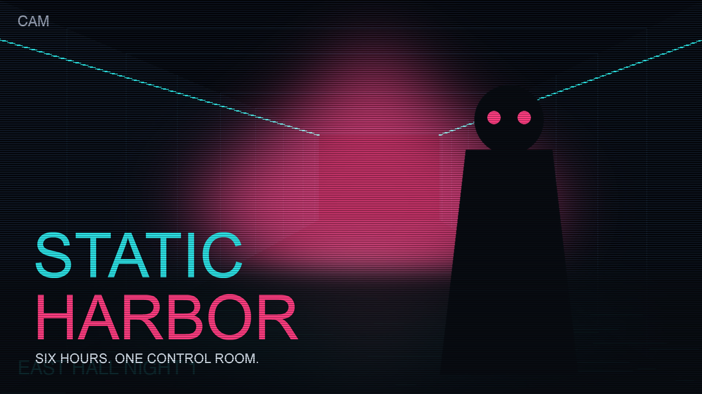
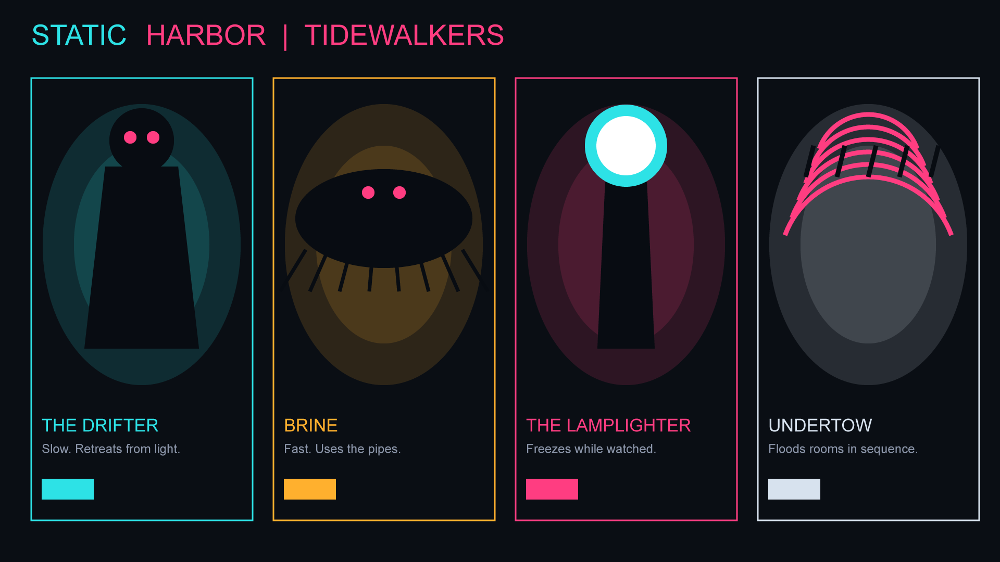
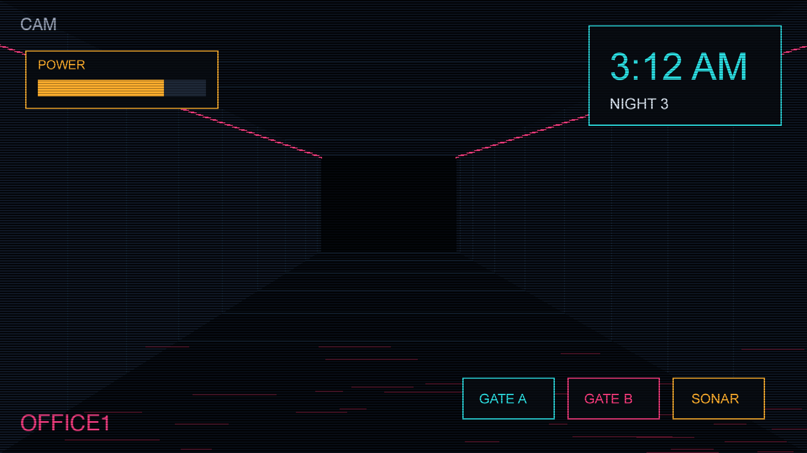
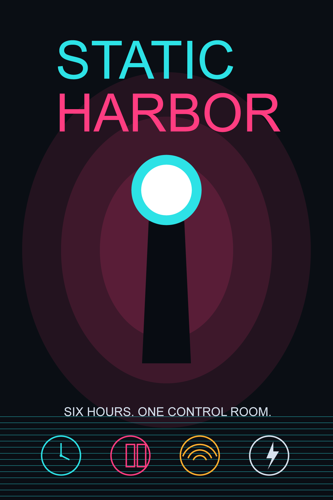

Portfolio
Eight pieces that pitch Static Harbor, each with its concept, execution and software.
Artifact 1 of 8

Add media/01-key-art.jpgArtifact 2 of 8

Add media/02-character-sheet.pngArtifact 3 of 8
Artifact 4 of 8
Artifact 5 of 8
Artifact 6 of 8
Artifact 7 of 8

Add media/07-ui-mockup.pngArtifact 8 of 8

Add media/08-poster.png